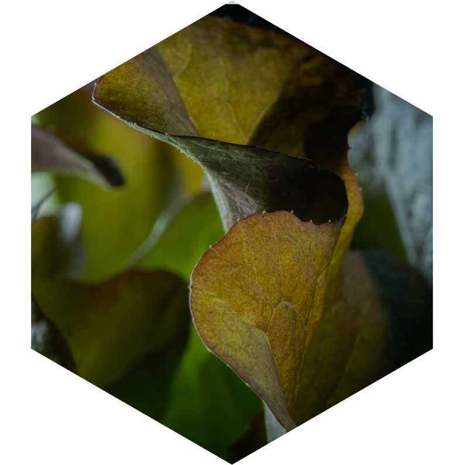
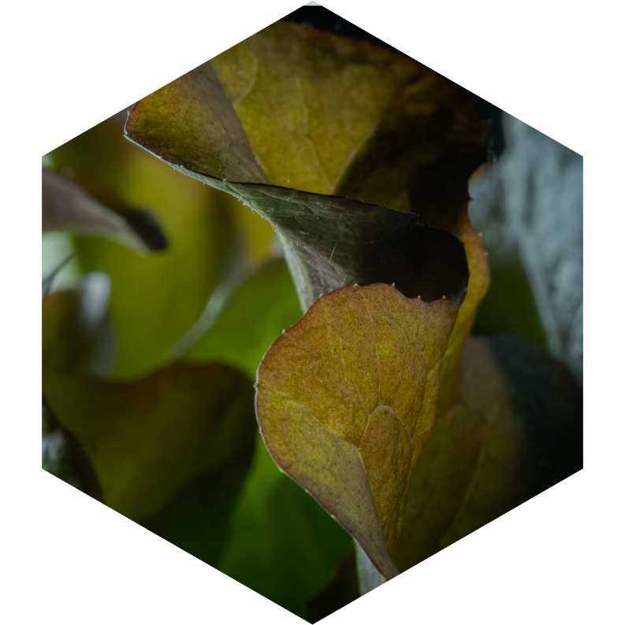

THE SALANOVA
lettuce
The Salanova lettuces are characterised by their efficiency. They are
developed for
farmers
to increase their production volume and for chefs to save time in their preparation. Lettuce
types in the Salanova range have a unique core that can be removed with one cut and the
entire
head of lettuce is separated, ready to be used. These qualities make them time-efficient and
resourceful.
Available year-round, the range consists of 5
different types of
lettuce; butter, oak leaf, lollo, crispy and batavia. All types come in two colours: red
and green. The Salanova lettuces have 3 times more leaves than other lettuce varieties,
shaped around a round base in a rosette pattern. Their leaves are small in size. The
flavour and texture range from sweet and soft (buttery) to crisp, frilly and crunchy
(similar to an iceberg lettuce).
The Salanova lettuces are easy to
grow
hydroponically (in sand, gravel or liquid with added nutrients, but without soil),
which is how they are grown at SMARTKAS. They are also high-yielding, more resistant
to disease, and require less labour when harvesting. The shelf life for this range
of lettuces is longer.
 
